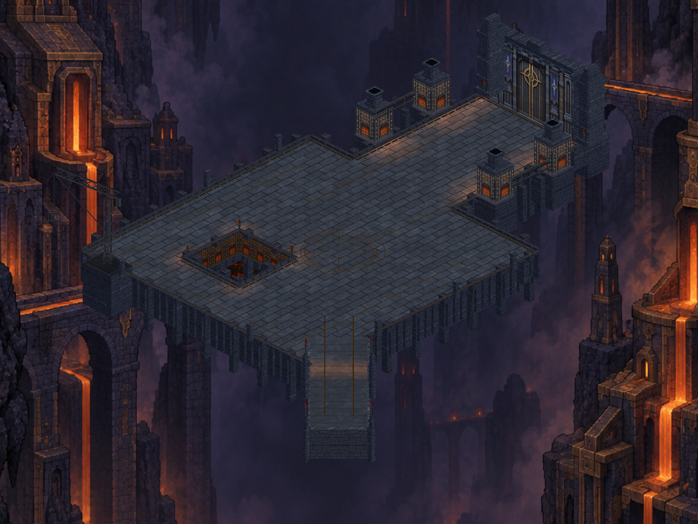
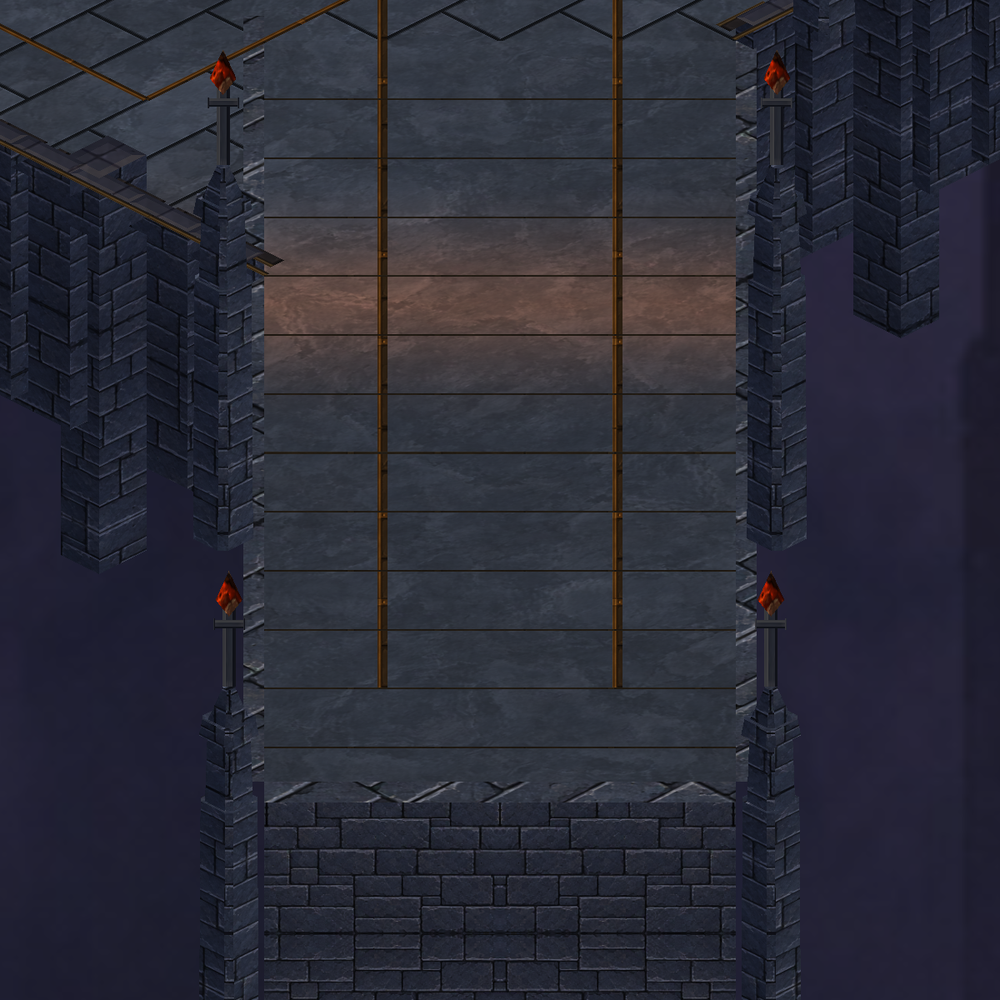
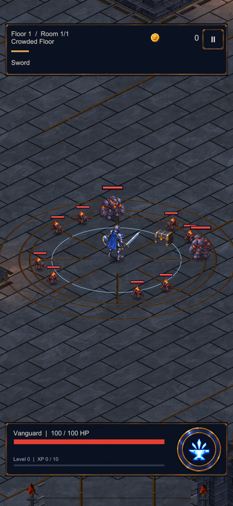

CRYPTFORGE / 24 EYLÜL 2026Avlu, köprü, vinç ve kuyu
Tek pakette tamamlanan çevre düzenlemesi: aşınmış büyük taş döşemeler, köprü ayakları, çevre başlıkları, vinç bağlantıları ve kuyu iç demirleri. Aşağıdaki karşılaştırma aynı açıdan gerçek Unity sahnesini gösterir.

Giriş köprüsü

Oyun kamerası

Telefonda doğrulandı
S23 üzerinde köprüden avluya hareket ve savaş kontrol edildi. 535 Unity testi geçti; oyun avluda duraklatıldı.
Yeni taş malzemesi built-in image_gen ile üretildi; oyundaki döşeme ve mimari şekiller Unity geometrisidir. Değiştirilmemiş taş kaynağı · Üretim promptu · Üretim ve doğrulama kaydı